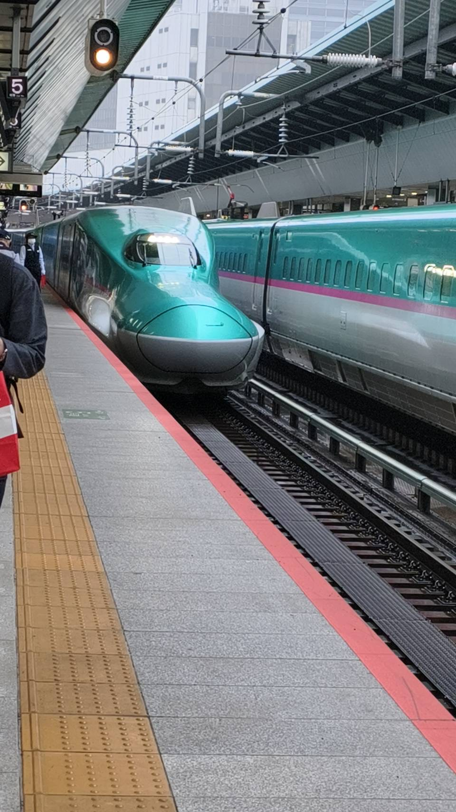
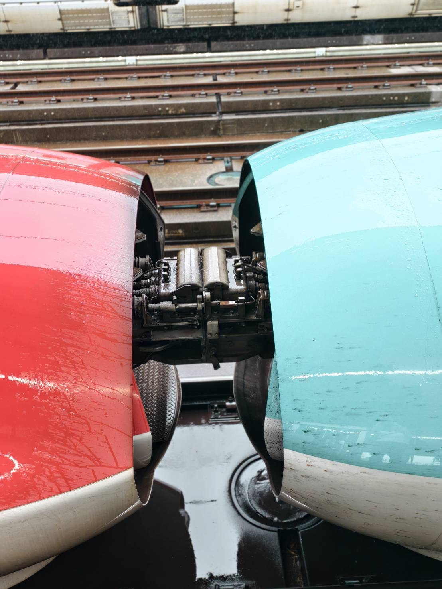
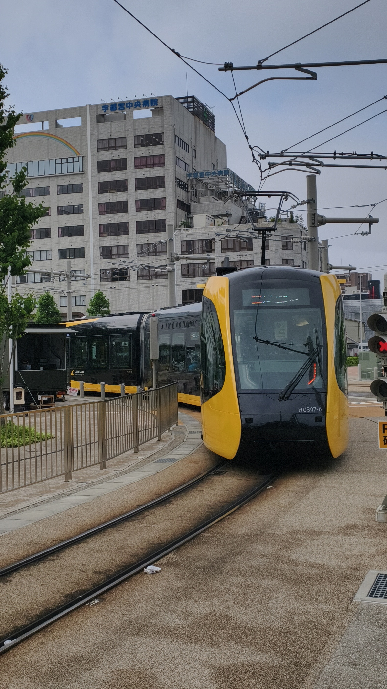
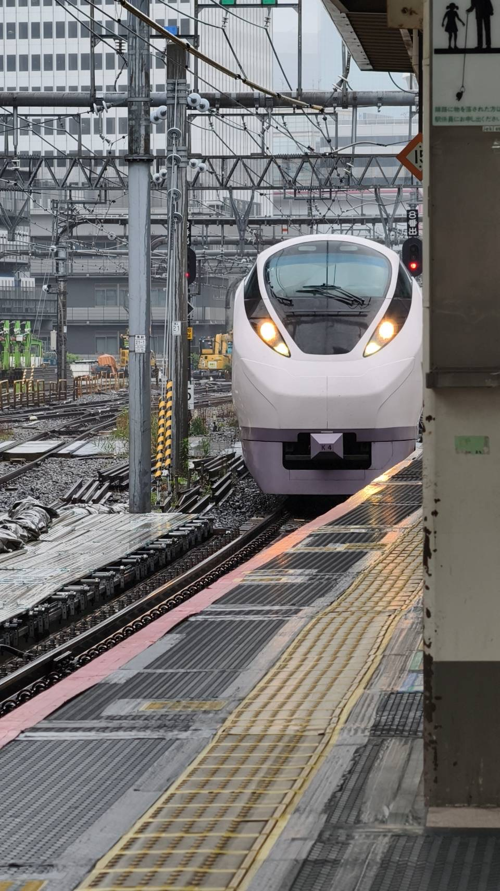
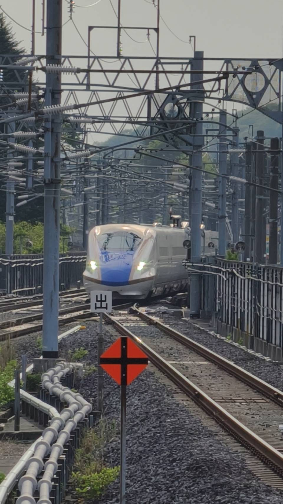
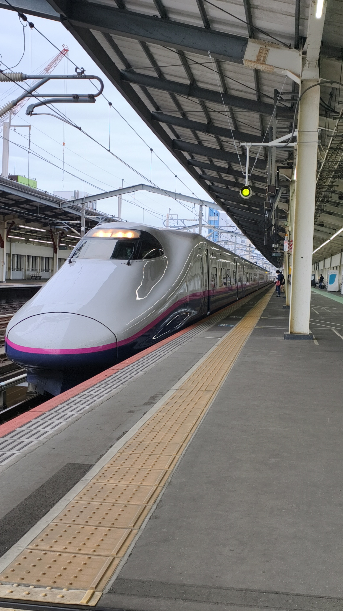
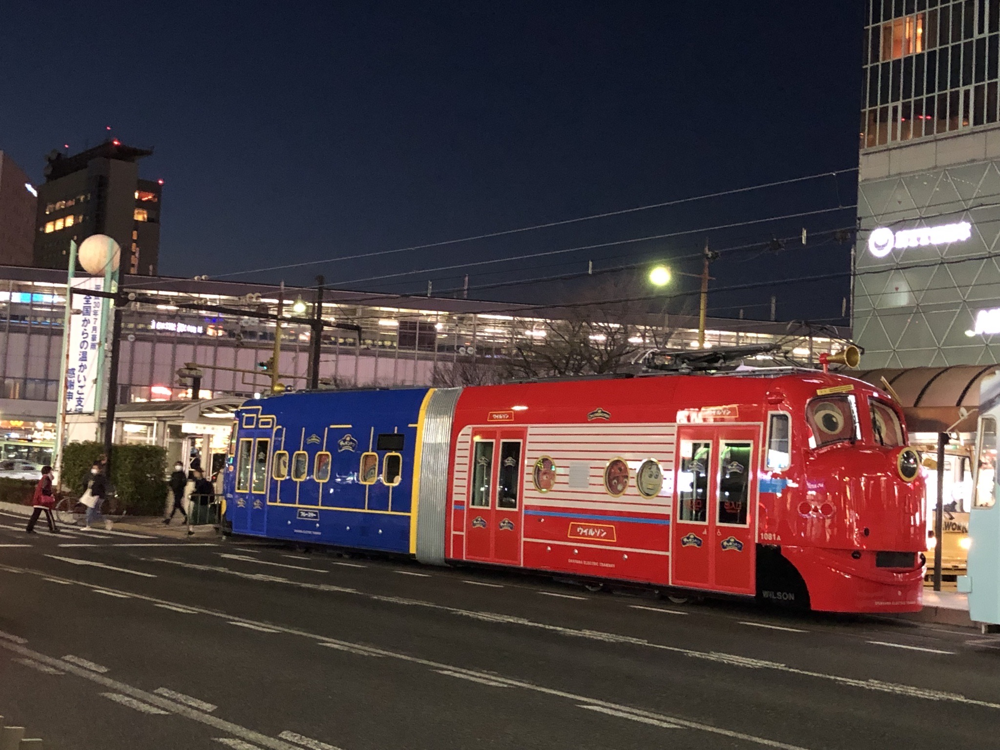
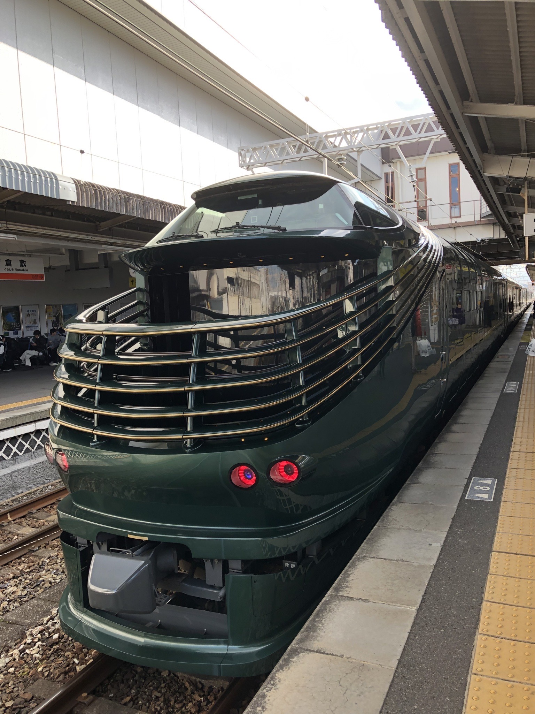
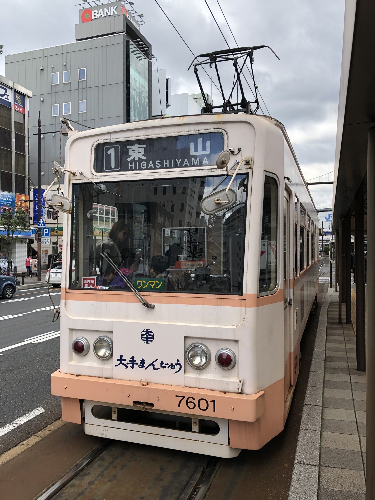

日本鐵道攝影作品
收錄 Michael 在日本旅途中拍攝的新幹線、特急列車、地方鐵道與車站風景。（共 27 張）

藤澤站的江之電
江之電列車停靠藤澤站，復古車身與終點站月台構成經典畫面。

江之電雙車交會
不同世代的江之電列車並列停靠，呈現湘南鐵道特有的風景。

旭川站的H100型
彩繪車頭的H100型柴聯車，在旭川站玻璃帷幕與陽光中準備出發。

KiHa 40 試運轉
經典KiHa 40型柴聯車掛上「試運轉」方向幕，留下珍貴的運行紀錄。

新幹線進站
白色流線車頭穿越密集的架空線與月台，展現日本高速鐵道風景。

ONE PIECE 新幹線
以人氣作品為主題的限定彩繪新幹線，為旅程增添鮮明色彩。

幸運的Doctor Yellow
難得現身的黃色新幹線檢測列車，吸引月台上的鐵道迷共同記錄。

關空特急HARUKA
白色車身的HARUKA駛入月台，連結大阪、京都與關西國際機場。

TAMA電車博物館號
和歌山電鐵的黑色TAMA主題列車，以貓站長與金色裝飾展現獨特魅力。

新幹線雙車並列
兩列白色新幹線在月台同框，流線車頭形成難得的對照畫面。

夜色中的新幹線
銀色列車停靠夜間月台，在燈光與軌道交織下展現沉靜的速度感。

Hello Kitty新幹線
500系新幹線換上粉紅色Hello Kitty彩繪，成為山陽新幹線的人氣列車。

JR四國8600系
銀灰車身搭配紅色流線車頭，呈現JR四國特急列車的現代風格。

700系Rail Star
700系光號鐵路之星行駛於山陽新幹線，深色駕駛窗與灰色車身極具辨識度。

特急黑潮號
以紀伊半島為主要舞台的特急列車，連結大阪與和歌山地區。

ONE PIECE 新幹線
以《ONE PIECE》為主題的特別彩繪新幹線，藍色車頭與限定塗裝展現鮮明的冒險風格。

273系特急八雲號
銅色車身的273系特急八雲號穿越複雜軌道，展現新世代伯備線特急風貌。

特急「まほろば」安寧編組
JR西日本683系改造的特急列車停靠新大阪站，以蘇芳色車身與金色紋樣展現奈良文化的典雅意象。

E5系新幹線並列
綠色流線型車頭在月台相遇，呈現東北新幹線極具速度感的造型。

隼號與小町號連結
E5系「隼號」與E6系「小町號」紅、綠車頭相接，記錄新幹線連結器的機械細節。

宇都宮輕軌 LIGHTLINE
黃黑色HU300型低底盤電車行駛於市區，展現宇都宮新世代路面交通風貌。

E657系特急「常盤號」
E657系特急「常盤號」駛入月台，白色流線車頭與淡紫色飾帶呈現常磐線特急的現代風貌。

北陸新幹線 E7／W7系
藍色流線車頭從密集的架空線與軌道間駛來，展現北陸新幹線的速度感。

E3系山形新幹線「翼號」
銀灰色車身搭配紫紅色飾帶的E3系「翼號」停靠月台，留下經典山形新幹線的身影。

岡山電氣軌道恰恰特快車
紅、藍雙車體造型鮮明，是岡山市區極具特色的路面電車。

TWILIGHT EXPRESS 瑞風
JR西日本豪華觀光列車TWILIGHT EXPRESS「瑞風」，停靠於日本倉敷站。

岡山電氣軌道7601號
開往東山的岡山路面電車，車身帶有「大手まんぢゅう」廣告。